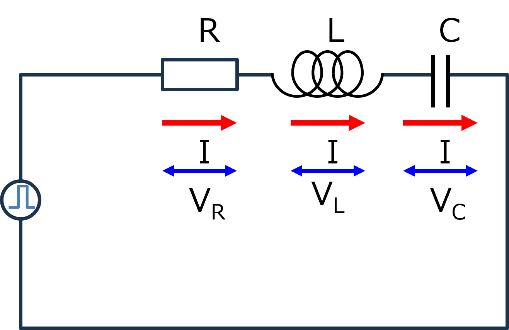

１６ー１．電圧で考えてみる（RLC回路）
このページからは，いよいよRLC回路のステップ関数の場合の応答を，電圧，で考えていきます．
たぶん，実際の計測では電流計よりも電圧計のほうが使い勝手がいいでしょう．
まずは，抵抗，コイル，コンデンサが直列の回路について

基本的な式は，
\(\Large V = V_R + V_L + V_C \)
\(\Large V_R = R \cdot I(t) \)
\(\Large V_L = L \ \frac{d}{dt} I(t) \)
\(\Large V_C = \frac{1}{C} \int I(t) \ dt \)
\(\Large V = R \cdot I(t) + L \ \frac{d}{dt} I(t) + \frac{1}{C} \int I(t) \ dt = V_0 \ u(t)\)
\(\Large \omega_0 = \frac{1}{ \sqrt{LC}} \)
\(\Large \alpha = \frac{R}{2L} \)
ステップ関数となるので，
\(\Large V(t) \ : \ V_0 \ ( 0 \leq t \leq t_0) \)
\(\Large \hspace{35 pt} : \ 0 \ (0>t, t_0 < t) \)
となります．
三つの条件における電流の応答は，
α < ω0
0 < t < t0
\(\Large I_1(t) = \displaystyle \frac{V_0}{ \omega L} \cdot e^{- \alpha t} \cdot sin ( \omega t)\)
t0 < t
\(\Large I_2(t) = \displaystyle \frac{V_0}{ \omega L} \left[ e^{- \alpha t} \cdot sin ( \omega t) - e^{- \alpha (t-t_0)} \cdot sin \ \omega (t-t_0) \right] \)
α > ω0
0< t < t0
\(\Large I_1(t) = \displaystyle \frac{V_0}{2\omega L} \cdot e^{- \alpha t} \cdot \left[ e^{ \omega t} -e^{-\omega t} \right] = \frac{V_0}{\omega L} \cdot e^{- \alpha t} \cdot sinh \ ( \omega t)\)
\(\Large \hspace{40pt} \left(sinh (x) = \frac{e^x - e^{-x}}{2} \right) \)
t0 < t
\(\Large I_2(t) = \displaystyle \frac{V_0}{\omega L} \left[ e^{- \alpha t} \cdot sinh \ ( \omega t) - e^{- \alpha (t-t_0)} \cdot sinh \ \omega (t-t_0)\right]\)
\(\Large \hspace{40pt} \left(sinh (x) = \frac{e^x - e^{-x}}{2} \right) \)
α = ω0
0< t < t0
\(\Large I_1(t) = \displaystyle \frac{V_0}{L} \cdot \ t \cdot e^{- \alpha t} \)
t0 < t
\(\Large I_2(t) = \displaystyle \frac{V_0}{L} \left[ t \cdot e^{- \alpha t} - (t-t_0) \cdot e^{- \alpha (t-t_0)} \right] \)
となります．いずれも，ステップオフの場合は，
第一項 ： 最初のステップオンの際の波形（たとえば，0→1）
第二項 ： t=t0，において，1→0，のように，逆のステップを入力した波形
なので，ステップオフ後，の波形は，
ステップオンの波形の残り ＋ マイナスのステップの波形 の和
となるわけです．
次ページから，電圧で考えてみましょう．